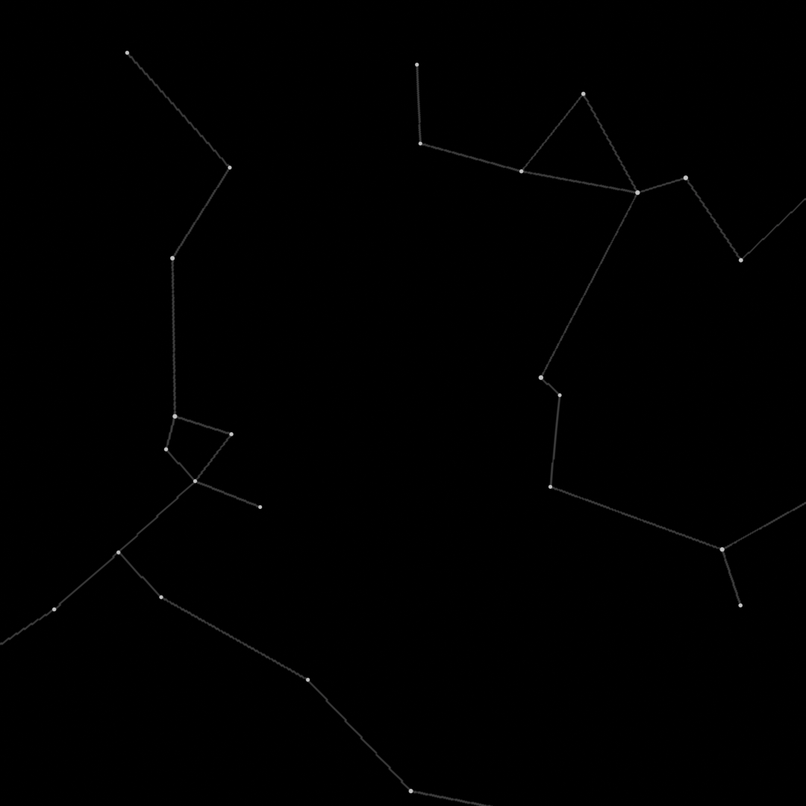
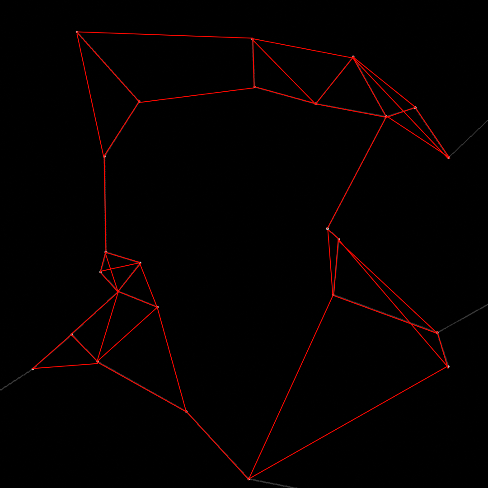
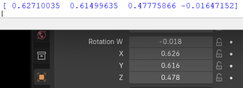

Finding stars is easy, its just the bright spot on the camera in a sea of black. Finding which star it is becomes much harder as there are a lot of stars. Most star trackers utilize small differences in each star (color, brightness) to help determine what star each is and therefore which direction the camera is pointing. I decided to use my constellation work, which doesnt have much color detail in it, meaning that the use of color and brightness were heavily reduced and I decided not to travel this path. Instead I took a graph theory approach.
Every star has nearby neighbors. those near neighbors are some distance from the star being chacked and will form some angle with other nearby stars. This data can be stored and retrieved later to find the best fir for the current grouping of stars being looked at. For this data, I set it to use the 3 closests stars, so an image must have at least 4 stars to get something that works. There's a high chance that some of a stars neighbors might be off the camera, so even more stars would be needed to get a true identification.

Finding the 3 closest stars for each star on the image. Note that any stars not in the camera are accounted for.
With a main star identified, a comparison to the neighbors and their distances can be made to identify the other stars in the region. Using their positions on the image, a reverse matrix solve can be used to recreate the camera orientation matrix. This solves the rotation of the camera in space and can be used for any other calibration needs.

Calculated values and actual camera values.
If I were to use color/brightness and really stretch the margins of error, an orientation matrix could be found with only 2 stars. I had some troubles with the process (lack of detailed color and brightness data from using a jpg image) meaning I needed to use relative angles to guarentee star identification. I could probably get away with finding the 2 closests stars instead of 3, but this is just a proof of concept and runs well enough.